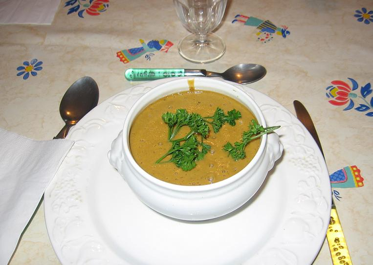
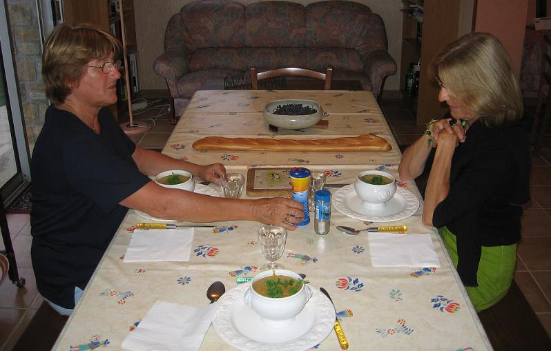
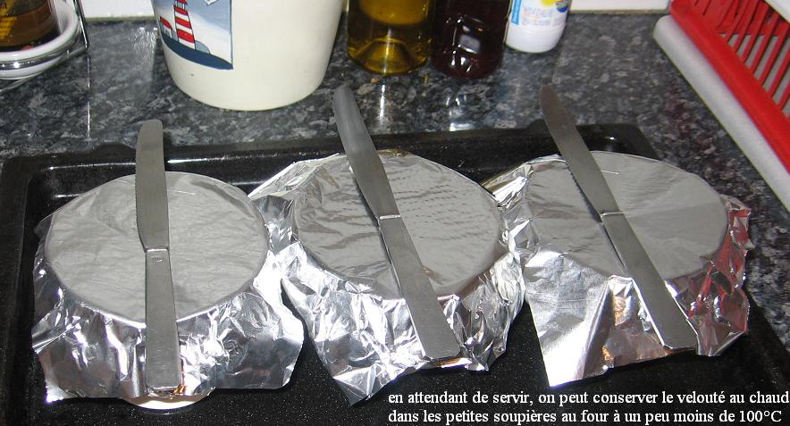

Recette n° 65 :
Velouté de moules à
l'infusion d'oseille
.
Ingrédients : (pour 4 personnes)
- 1,3 kg de moules de bouchot
- une grosse botte d'oseille fraîche
- 2 pommes de terre de taille moyenne
- 4 beaux oignons jaunes
- 150 g de fanes de céleri
- 5 cuillers à soupe de concentré de tomate
- une branche de thym
- 3 feuilles de laurier
- un oeuf
- 3 cuillers à soupe de crème fraîche
- 2 cuiller d'huile d'olive
- 1/2 citron jaune
- sel et poivre, selon goût

Préparation :
- nettoyer les moules en les brossant, en en retirant les "cheveux", en
éliminant celles qui ne se ferment pas, réserver
- mettre les deux pommes de terre à cuire dans l'eau, puis les
peler et les réserver
- hacher menu le céleri et les oignons, faire revenir dans
l'huile d'olive à la sauteuse en évitant de les
brûler
- ajouter les moules et le vin, couvrir d'eau, ajouter le citron
découpé en rondelles, saler et poivrer, porter à
ébullition en remuant jusqu'à ce que les moules soient
ouvertes (quelques minutes)
- égoutter les moules en conservant le jus qu'on met à
réduire d'un tiers environ
- décoquiller les moules et les réserver
- séparer le blanc et le jaune de l'oeuf
- mélanger le jaune d'oeuf et la crème fraîche,
réserver
- battre le blanc presque en neige, y mélanger le
concentré de tomate, le thym et le laurier, bien mélanger
- retirer le jus des moules du feu, y mettre le mélange
précédent, remettre sur le feu et laisser frémir
quelques minutes
- retirer du feu, y mettre l'oseille qu'on a préalablement
ciselée, couvrir d'un linge et laisser infuser quinze minutes
- retirer le thym, le laurier et les rondelles de citron
- mélanger au jus le mélange du jaune d'oeuf et de
crème, ainsi que les pommes de terre cuites et pelées
- passer le jus au mixer
- mélanger les moules au jus mixé
- servir en petites soupières avec quelques branches de persil,
ou de cerfeuil, ou de coriandre

Observations :
1 - recette exécutée le 1er septembre 2006 et
testée par Andrée, Mamy et moi.
2 - j'avais laissé trop de citron (la peau du citron ayant
été laissée et broyée avec le jus, ce qu'il
ne faut pas faire, car le goût de citron est trop fort)